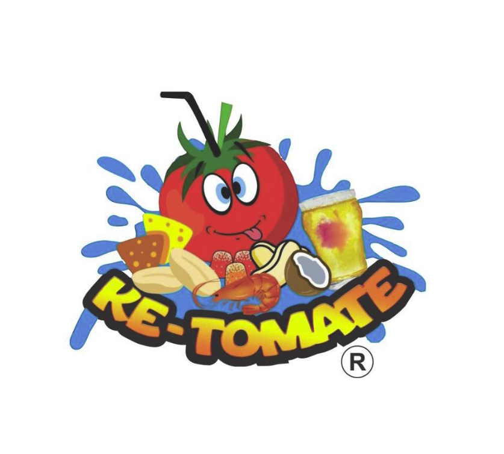

Simplemente la Michelada Perfecta
Bar de micheladas con 4 sucursales en Cuernavaca, Morelos. Marca registrada desde 2024. ¡Ya somos franquicia!
Nuestro Concepto
Ke-Tomate es un bar especializado en micheladas y preparados de cerveza. NO somos un restaurante tradicional — nos enfocamos en bebidas preparadas y botanas. El ambiente es casual, divertido, con música y colores vibrantes. Perfecto para reuniones con amigos, fin de semana, after-work y celebraciones.
Público: Jóvenes adultos de 18 a 35 años. Precios accesibles desde $50 MXN.
4
Sucursales
2024
Marca Registrada
NEW
Franquicia 2026
CDMX
Próximamente
Para Acompañar
Dónde Encontrarnos
4 sucursales en Cuernavaca, Morelos — y próximamente en CDMX
Avenida 10 de Abril S/N, Las Granjas, CP 62460, Cuernavaca, Morelos
Tel: 56 3329 5799
Avenida 10 de Abril #54, Col. Satélite, Cuernavaca, Morelos
Cuernavaca, Morelos — Zona sur de la ciudad
Cuernavaca, Morelos — Zona norte de la ciudad
¡Lleva Ke-Tomate a tu ciudad con nuestra franquicia!
Lunes a Viernes
12:00 PM - 8:00 PM
Sábado y Domingo
9:00 AM - 8:00 PM
Modelo de Negocio
¡Ya somos franquicia desde febrero 2026! Un negocio probado, simple y con altos márgenes.
Ke-Tomate es una marca formalmente registrada con todos los derechos protegidos.
4 sucursales exitosas en Cuernavaca con clientes fieles.
No necesitas cocina compleja. El concepto se centra en micheladas y botanas.
Las bebidas preparadas tienen márgenes de ganancia muy atractivos.
Te enseñamos todo: preparación de bebidas, operación, servicio al cliente.
Estamos creciendo. CDMX es el siguiente destino.
El negocio opera con un equipo reducido, lo que mantiene costos bajos.
Las micheladas tienen alta demanda todo el año, especialmente en climas cálidos.
Solicita información sobre inversión, requisitos y territorio disponible.
Solicitar Información por WhatsAppContáctanos
Instagram: 2,988 seguidores · 260 posts · Cuenta verificada
Facebook: 3,300 seguidores